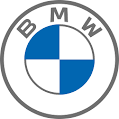

BMW

Про фірму
Bayerische Motoren Werke AG або скор. BMW — німецький автобудівний та авіамоторний концерн і однойменна торгова марка автомобілів преміум- та люкс-класу і мотоциклів.
Концерн є материнською фірмою (холдингом) об'єднання BMW Group, в яке входять такі окремі виробництва:мотоцикли BMW, автомобілі марок BMW, Rolls-Royce, MINI, дочірні виробництва BMW M, BMW i.
Моделі
До Другої світової війни
BMW була заснована Карлом Фрідріхом Раппом у жовтні 1916 року, спочатку як виробник авіаційних двигунів, Bayerische Flugzeug-Werke. Округ Мюнхена — Milbertshofen був обраний тому, що він розташований поблизу від Flugmaschinenfabrik Густава Отто — німецького виробника літаків.
>
Історія фірми
- У 1916 році компанія підписує контракт на виробництво двигунів V12 для Австро-Угорщини. Потребуючи додаткового фінансування, Рапп отримує підтримку Камілло Кастільйоні і Макса Фріца, компанія відтворюється як Bayerische Motoren Werke GmbH. Надмірне розширення стало причиною ускладнень,
Рапп покинув компанію, і керівництво компанією було прийнято австрійським промисловцем Францем Джозефом Поппом у 1917 році, компанія була перейменована у BMW AG в 1918.
- У 1919 році Франц Дімер встановив перший світовий рекорд BMW, піднявшись на висоту 9760 метрів на аероплані з двигуном BMW.
- У 1919 році BMW розробив свій перший мотоциклетний двигун, що використовувався у моделі Victoria, яку випускала компанія у місті Нюрнберг.
- 1922 — BMW будує свою сьогоднішню основну будівлю на схід від мюнхенського аеропорту Обервізенфельд (сьогодні це міський Олімпійський Центр).
- У 1923 році BMW випускає перший мотоцикл — R32, який мав горизонтально-опозитний двигун повітряного охолодження об'ємом 500 см³.
- 1924 — перший міжконтинентальний політ в Персію на літаку, оснащеному двигунами BMW.
- 1926 — гідролітак Rohrbach Ro VII з двигунами BMW VI встановлює п'ять світових рекордів
- 1927 — у цьому році було встановлено 87 світових рекордів в авіації. 29 з них — на літаках з двигунами BMW.
- 1939 — початок серійного виробництва найбільшої і найпотужнішої довоєнної моделі BMW 335
- 1948 — мотоцикл BMW R 24 з Мюнхена стає першим післявоєнним виробом BMW.
- 1950 — BMW R51 / 2 — відродження мотоциклів з двоциліндровими двигунами.
- 1951 — BMW виробляє свій перший післявоєнний автомобіль — 501.
- 1955 — Відділення BMW Triebwerk GmbH повертається до життя. Компанія орієнтується на традиції виробництва авіамоторів.
- 1956 — Спортивні автомобілі моделей 503 і 507.
- 1959 — Модель 700 стала першим великим серійним успіхом для автомобілів BMW. Компанія BMW виставляється на продаж.
- 1994 — Запущено завод BMW в Спартанбурзі. Відкрито 16-ту філію BMW de Mexico SA, створено торгове представництво в Пекіні.
- 1995 — Презентація легендарного BMW Z3 Roadster. Автомобіль стає зіркою кінематографу і знімається у фільмі про Джеймса Бонда.
- 1999 — На автосалоні в Детройті проходить презентація нового повнопривідного автомобіля BMW X5.